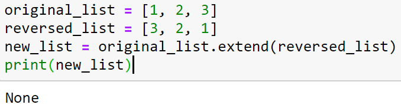
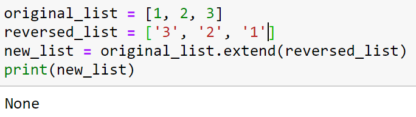
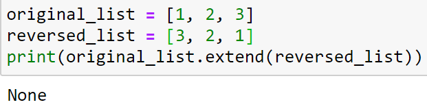

נראה שכבר נשרף לי המוח מרוב כתיבת קוד.
אני תקוע בתרגול של extend (מחברת 4), בו מתבקשים לכתוב פונקציה שמחזירה רשימה המכילה את הרשימה המקורית, ואחריה הרשימה ההפוכה.
הרעיון לא מסובך, ואני מתבסס על התירגול הקודם עם הפונקציה של הרשימה ההפוכה. חושב שאני מבין בדיוק מה צריך לעשות.
אבל לא משנה מה אני עושה, זה לא עובד. כבר ישבתי על זה קרוב לשעתיים.
ראשית, נראה שהפונקציה extend לא עובדת. מראה ניסוי שעשיתי עם המקרים הכי פשוטים -

גם לא -

וגם לא -

הפונקציה כן עובדת בדוגמה עם החיות שכבר קיימת במחברת.
כמו כן, הפונקציה עבדה לי באחד הנסיונות הקודמים, אך החזירה את הרשימה ההפוכה כאשר המספרים החדשים מסוג str ולא Int. ניסיון לשנות את זה לא עבד. כמו כן, אחרי כל הפיכה של רשימה, הרשימה המקורית התרוקנה.
במחברת כמעט אין הסבר על הפעולה. האם היא לא יכולה לקבל Int? חיפוש זריז באינטרנט לא עזר.
אשמח להבין מה אני מפספס.
תודה מראש
aviadamar
תעשה את הפעולה מחוץ לפרינט ואז תדפיס את המחרוזת הרצויה, זה אמור להסתדר.
באופן כללי יש בפייתון מתודות שאינן משנות את האובייקט שהן עובדות עליו אלא מייצרות אובייקט חדש - כדוגמת מתודות של מחרוזות שאם שוכחים לשמור אותן השינוי אינו נשמר, ולעומת זאת ישנן מתודות שמשנות את האובייקט עליו הן פועלות מבלי להחזיר אובייקט חדש, והן אינן מחזירות דבר, כלומר מחזירות None.
בין יתר המתודות האלה נכללת extend, כמו גם מתודות נוספות של רשימות. לעומת זאת אין למחרוזות למשל מתודות כאלה שכן מחרוזת היא immutable - דבר שמוסבר עליו מעט במחברת 5
4 לייקים
dingross
תודה על התגובות.
הבעיה שלי בכלל היתה שבתוך הפונקציה שהופכת את הרשימה, השתמשתי בpop, שמרוקנת את הרשימה המקורית…
לייק 1
oriko9
היי (
אני לא מבין כנראה את פעולת הפופ, תוכלו להסביר לי למה הלולאת WHILE מרוקנת לי את הרשימה המקורית?
הפונקציה פופ שולפת איבר מהמרשימה ומחזירה אותו. (כלומר פיזית מקצרת את הרשימה)
הסבירה שהרשימה המקורית שלך גם היא “מתרוקנת” מאיברים, אינה קשורה לפעולת הפופ עצמה אלא קשור לדרך בה “שכפלת” \ השמת את הרשימה המקורית לרשימה החדשה ב copy_list
ברגע שאתה עושה השמה של רשימה למשתנה אחר - עדין שני המשתנים האלה מצביעים לאותה רשימה בזכרון (אפשר להשתמש בפונקציה id כדי לראות זאת.
אתה צריך לשכפל את הרשימה בצורה שמייצרת ממש פיזית עוד רשימה בזכרון.
שווה לחפש על זה באינטרנט
2 לייקים
efratush
בשורה copy_list = list_og
אתה יוצר משתנה בשם copy_list שמצביע על אותו מקום בזכרון שמצביע המשתנה list_og. כך שכל שינוי בcopy_list משנה גם את הרשימה המקורית, ולהפך.
על מנת ליצור מקום חדש בזיכרון שמכיל את הערך של list_og, אך מצביע על מקום חדש, השתמש בפעולה: ()copy.